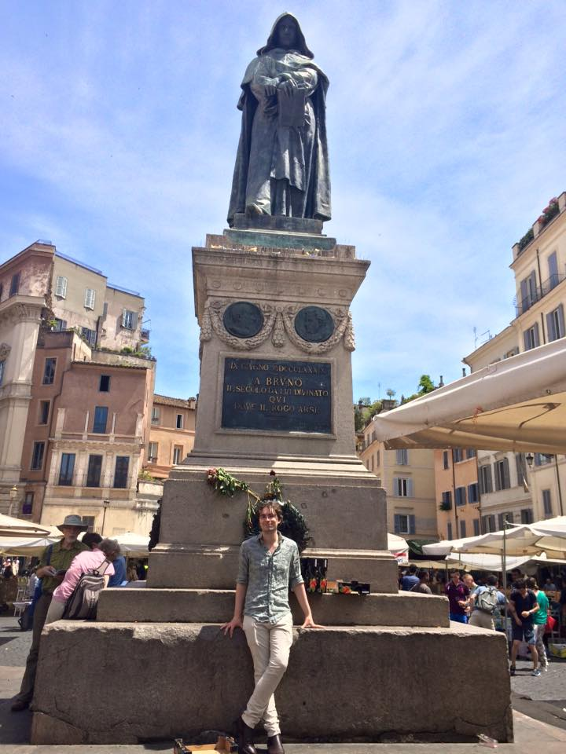
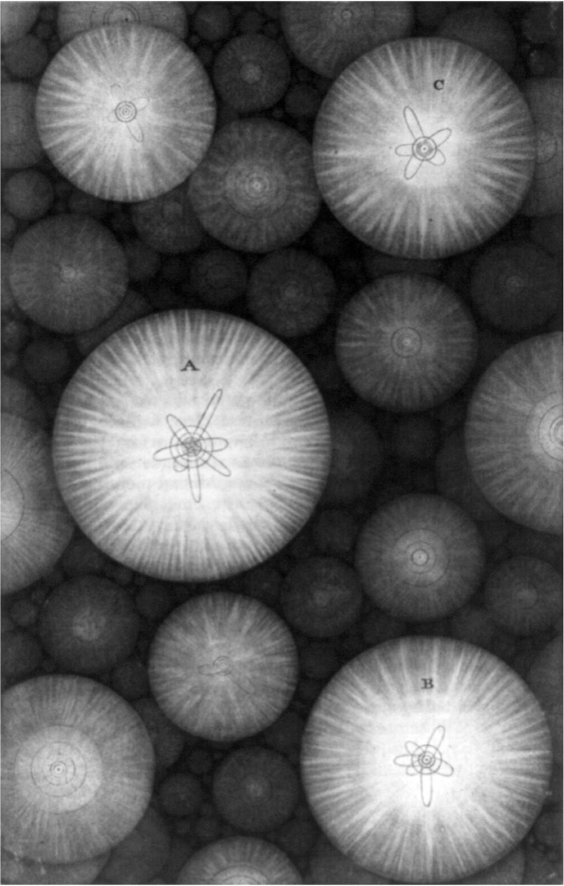
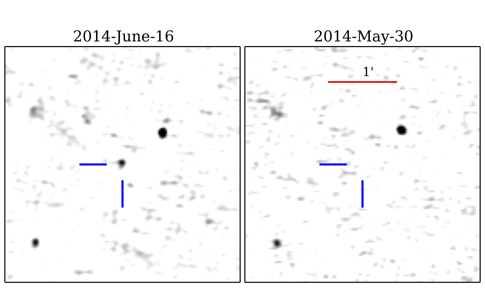

Exoplanets
Benjamin Pope
benjaminpope.github.io/talks/exoplanets/exoplanets.html
History
Is Pluto a planet?
A is in orbit around the Sun,
B has sufficient mass for its self-gravity to overcome rigid body forces so that it assumes a hydrostatic equilibrium (nearly round) shape, and
C has cleared the neighbourhood around its orbit.'
I prefer this! More inclusive!
"There are countless suns and countless earths all rotating around their suns in exactly the same way as the seven planets of our system.
The countless worlds in the universe are no worse and no less inhabited than our Earth." (quoted in Kasting 2010.
Poorly received in Oxford:
"he vndertooke among very many other matters to set on foote the opinion of Copernicus, that the earth did goe round, and the heavens did stand still; wheras in truth it was his owne head which rather did run round, & his braines did not stand stil"
Received even worse in Rome!
Thomas Wright, An Original Theory or New Hypothesis of the Universe (1750)
Swedenborg-Kant-Laplace "Urnebel" hypothesis
...and now we have seen them! (eg HL Tau)

Pulsar planets! Wolszczan & Frail (1992)

Number of known exoplanets double every 27 months

Radial Velocity
The first exoplanet: 51 Pegasi b, in 1995

Nobel Prize in 2019: Mayor & Queloz for 51 Peg b discovery
Transits
Exoplanet-style transit light curve of Venus from James Gilbert on Vimeo.
My first planet: EPIC 212521166 b!

Microlensing
Direct Imaging
Astrometry
Toliman Space Telescope

Early pupil design & simulation
TOLIMAN lab test phase mask
Radio
Total: ?
The LOw Frequency Aperture Array (LOFAR) in the Netherlands has been surveying the northern sky.
GJ 1151

The Future
The European Extremely Large Telescope will do direct imaging and RV!
The James Webb Space Telescope will do atmospheric transmission spectra!
The Square Kilometre Array will detect hundreds of planets in the radio!